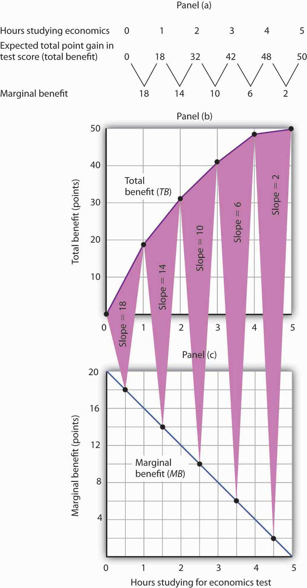
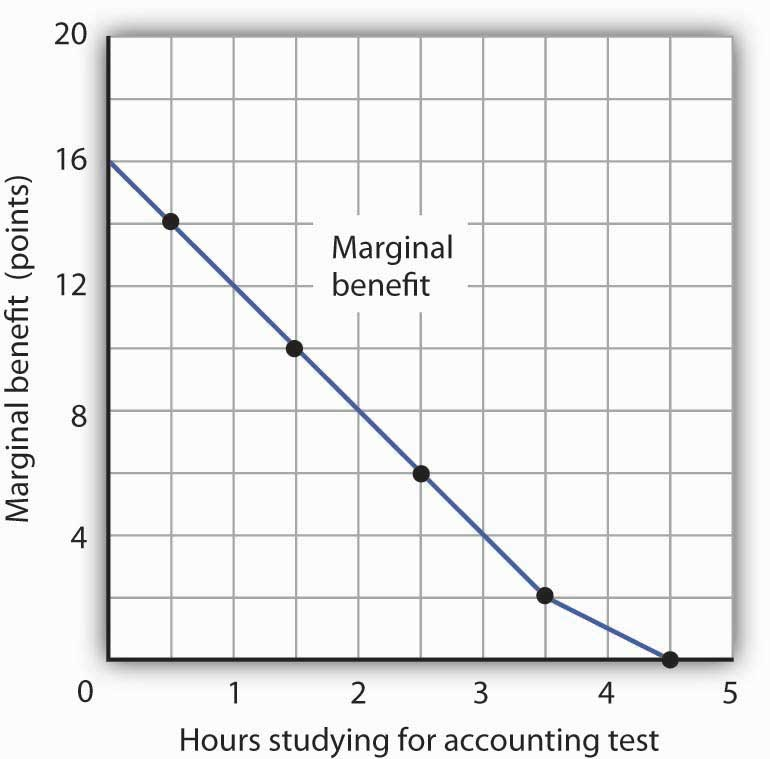
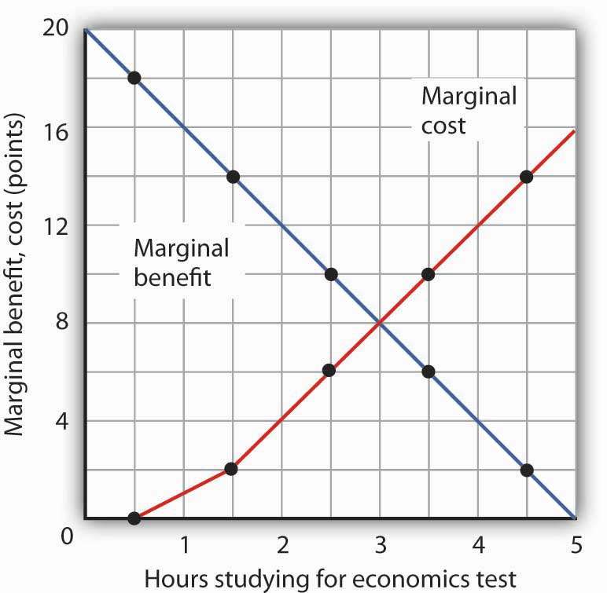
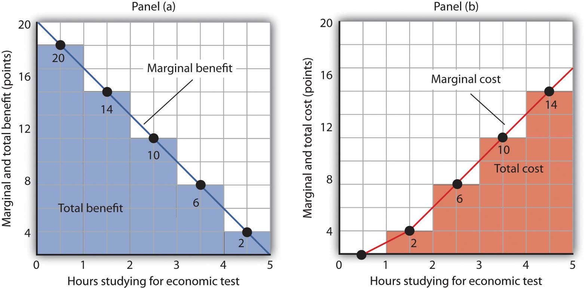
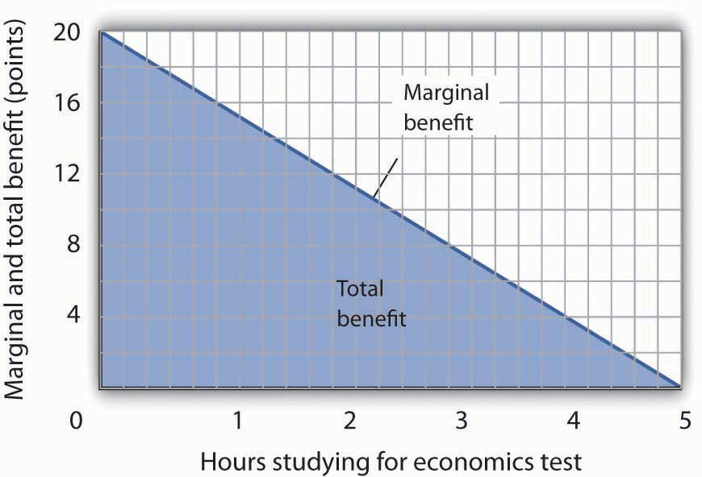
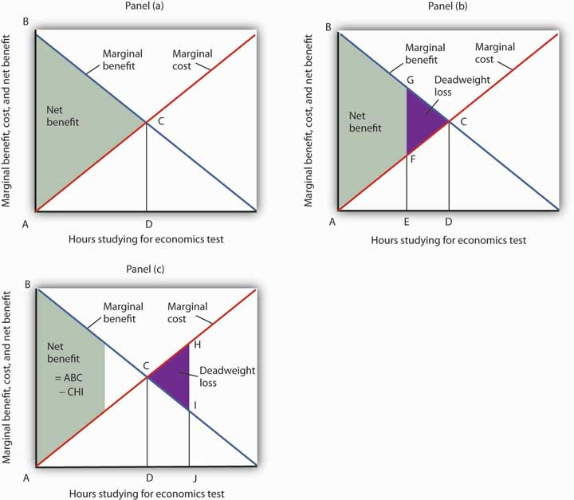

To say that individuals maximize is to say that they pick some objective and then seek to maximize its value. A sprinter might want to maximize his or her speed; a politician might want to maximize the probability that he or she will win the next election. Economists pay special attention to two groups of maximizers: consumers and firms. We assume that consumers seek to maximize utility and that firms seek to maximize economic profitThe difference between total revenue and total cost., which is the difference between total revenue and total cost. The costs involved in this concept of economic profit are computed in the economic sense—as the opportunity costs, or value of the best opportunity forgone.
The assumption of maximizing behavior lies at the heart of economic analysis. As we explore its implications, however, we must keep in mind the distinction between models and the real world. Our model assumes that individuals make choices in a way that achieves a maximum value for some clearly defined objective. In using such a model, economists do not assume that people actually go through the calculations we will describe. What economists do argue is that people’s behavior is broadly consistent with such a model. People may not consciously seek to maximize anything, but they behave as though they do.
The activities of consumers and firms have benefits, and they also have opportunity costs. We assume that given these benefits and costs, consumers and firms will make choices that maximize the net benefitThe total benefit of an activity minus its opportunity cost. of each activity—the total benefit of the activity minus its opportunity cost. The specific measures of benefit and cost vary with the kind of choice being made. In the case of a firm’s choices in production, for example, the total benefit of production is the revenue a firm receives from selling the product; the total cost is the opportunity cost the firm incurs by producing it. The net benefit is thus total revenue minus total opportunity cost, or economic profit.
Economists maintain that in order to maximize net benefit, consumers and firms evaluate each activity at the margin—they consider the additional benefit and the additional cost of another unit of the activity. Should you “supersize” your order at McDonald’s? Will the additional beverage and the additional french fries be worth the extra cost? Should a firm hire one more worker? Will the benefits to the firm of hiring this worker be worth the additional cost of hiring him or her?
The marginal benefitThe amount by which an additional unit of an activity increases its total benefit. is the amount by which an additional unit of an activity increases its total benefit. It is the amount by which the extra french fries increase your satisfaction, or the extra revenue the firm expects to bring in by hiring another worker. The marginal costThe amount by which an additional unit of an activity increases its total cost. is the amount by which an additional unit of an activity increases its total cost. You will pay more to supersize your McDonald’s order; the firm’s labor costs will rise when it hires another worker.
To determine the quantity of any activity that will maximize its net benefit, we apply the marginal decision ruleIf the marginal benefit of an additional unit of an activity exceeds the marginal cost, the quantity of the activity should be increased. If the marginal benefit is less than the marginal cost, the quantity should be reduced.: If the marginal benefit of an additional unit of an activity exceeds the marginal cost, the quantity of the activity should be increased. If the marginal benefit is less than the marginal cost, the quantity should be reduced. Net benefit is maximized at the point at which marginal benefit equals marginal cost. The marginal decision rule is at the heart of the economic way of thinking. The rule basically says this: If the additional benefit of one more unit exceeds the extra cost, do it; if not, do not. This simple logic gives us a powerful tool for the analysis of choice. Perhaps more than any other rule in economic analysis, the marginal decision rule typifies the way in which economists analyze problems. We shall apply it in every chapter that follows in the microeconomics portion of this text.
Maximizing choices must be made within the parameters imposed by some constraintA boundary that limits the range of choices that can be made., which is a boundary that limits the range of choices that can be made. We assume that a consumer seeks the greatest satisfaction possible within the limits of his or her income or budget. A firm cannot produce beyond the limits of its production capacity at a point in time.
The marginal decision rule forms the foundation for the structure economists use to analyze all choices. At first glance, it may seem that a consumer seeking satisfaction from, say, pizza has little in common with an entrepreneur seeking profit from the production of custom-designed semiconductors. But maximizing choices always follow the marginal decision rule—and that rule holds regardless of what is being maximized or who is doing the maximizing.
To see how the logic of maximizing choices works, we will examine a specific problem. We will then extend that problem to the general analysis of maximizing choices.
Suppose a college student, Laurie Phan, faces two midterms tomorrow, one in economics and another in accounting. She has already decided to spend 5 hours studying for the two examinations. This decision imposes a constraint on the problem. Suppose that Ms. Phan’s goal is to allocate her 5 hours of study so that she increases her total score for the two exams by as much as possible.
Ms. Phan expects the relationship between the time she spends studying for the economics exam and the total gain in her score to be as given by the second row of the table in Panel (a) of Figure 6.1 "The Benefits of Studying Economics". We interpret the expected total gain in her score as the total benefit of study. She expects that 1 hour of study will raise her score by 18 points; 2 hours will raise it by 32 points, and so on. These values are plotted in Panel (b). Notice that the total benefit curve rises, but by smaller and smaller amounts, as she studies more and more. The slope of the curve, which in this case tells us the rate at which her expected score rises with increased study time, falls as we travel up and to the right along the curve.
Figure 6.1 The Benefits of Studying Economics
The table in Panel (a) shows the total benefit and marginal benefit of the time Laurie Phan spends studying for her economics exam. Panel (b) shows the total benefit curve. Panel (c) shows the marginal benefit curve, which is given by the slope of the total benefit curve in Panel (b).
Now look at the third row in the table in Panel (a). It tells us the amount by which each additional hour of study increases her expected score; it gives the marginal benefit of studying for the economics exam. Marginal benefit equals the amount by which total benefit rises with each additional hour of study. Because these marginal benefits are given by the changes in total benefits from additional hours of study, they equal the slope of the total benefit curve. We see this in the relationship between Panels (b) and (c) of Figure 6.1 "The Benefits of Studying Economics". The decreasing slope of the total benefit curve in Panel (b) gives us the downward-sloping marginal benefit curve in Panel (c).
The marginal benefit curve tells us what happens when we pass from one point to another on the total benefit curve, so we have plotted marginal benefits at the midpoints of the hourly intervals in Panel (c). For example, the total benefit curve in Panel (b) tells us that, when Ms. Phan increases her time studying for the economics exam from 2 hours to 3 hours, her total benefit rises from 32 points to 42 points. The increase of 10 points is the marginal benefit of increasing study time for the economics exam from 2 hours to 3 hours. We mark the point for a marginal benefit of 10 points midway between 2 and 3 hours. Because marginal values tell us what happens as we pass from one quantity to the next, we shall always plot them at the midpoints of intervals of the variable on the horizontal axis.
We can perform the same kind of analysis to obtain the marginal benefit curve for studying for the accounting exam. Figure 6.2 "The Marginal Benefits of Studying Accounting" presents this curve. Like the marginal benefit curve for studying economics, it slopes downward. Once again, we have plotted marginal values at the midpoints of the intervals. Increasing study time in accounting from 0 to 1 hour increases Ms. Phan’s expected accounting score by 14 points.
Figure 6.2 The Marginal Benefits of Studying Accounting
The marginal benefit Laurie Phan expects from studying for her accounting exam is shown by the marginal benefit curve. The first hour of study increases her expected score by 14 points, the second hour by 10 points, the third by 6 points, and so on.
Ms. Phan’s marginal benefit curves for studying typify a general phenomenon in economics. Marginal benefit curves for virtually all activities, including the activities of consumers and of firms, slope downward. Think about your own experience with studying. On a given day, the first hour spent studying a certain subject probably generates a greater marginal benefit than the second, and the second hour probably generates a greater marginal benefit than the third. You may reach a point at which an extra hour of study is unlikely to yield any benefit at all. Of course, our example of Laurie Phan’s expected exam scores is a highly stylized one. One could hardly expect a student to have a precise set of numbers to guide him or her in allocating study time. But it is certainly the case that students have a rough idea of the likely payoff of study time in different subjects. If you were faced with exams in two subjects, it is likely that you would set aside a certain amount of study time, just as Ms. Phan did in our example. And it is likely that your own experience would serve as a guide in determining how to allocate that time. Economists do not assume that people have numerical scales in their heads with which to draw marginal benefit and marginal cost curves. They merely assume that people act as if they did.
The nature of marginal benefits can change with different applications. For a restaurant, the marginal benefit of serving one more meal can be defined as the revenue that meal produces. For a consumer, the marginal benefit of one more slice of pizza can be considered in terms of the additional satisfaction the pizza will create. But whatever the nature of the benefit, marginal benefits generally fall as quantities increase.
Ms. Phan’s falling marginal benefit from hours spent studying accounting has special significance for our analysis of her choice concerning how many hours to devote to economics. In our problem, she had decided to devote 5 hours to studying the two subjects. That means that the opportunity cost of an hour spent studying economics equals the benefit she would have gotten spending that hour studying accounting.
Suppose, for example, that she were to consider spending all 5 hours studying accounting. The marginal benefit curve for studying for her accounting exam tells us that she expects that the fifth hour will add nothing to her score. Shifting that hour to economics would cost nothing. We can say that the marginal cost of the first hour spent studying economics is zero. We obtained this value from the marginal benefit curve for studying accounting in Figure 6.2 "The Marginal Benefits of Studying Accounting".
Similarly, we can find the marginal cost of the second hour studying economics. That requires giving up the fourth hour spent on accounting. Figure 6.2 "The Marginal Benefits of Studying Accounting" tells us that the marginal benefit of that hour equals 2—that is the marginal cost of spending the second hour studying economics.
Figure 6.3 "The Marginal Benefits and Marginal Costs of Studying Economics" shows the marginal cost curve of studying economics. We see that at first, time devoted to studying economics has a low marginal cost. As time spent studying economics increases, however, it requires her to give up study time in accounting that she expects will be more and more productive. The marginal cost curve for studying economics can thus be derived from the marginal benefit curve for studying accounting. Figure 6.3 "The Marginal Benefits and Marginal Costs of Studying Economics" also shows the marginal benefit curve for studying economics that we derived in Panel (b) of Figure 6.1 "The Benefits of Studying Economics".
Figure 6.3 The Marginal Benefits and Marginal Costs of Studying Economics
The marginal benefit curve from Panel (c) of Figure 6.1 "The Benefits of Studying Economics" is shown together with the marginal costs of studying economics. The marginal cost curve is derived from the marginal benefit curve for studying accounting shown in Figure 6.2 "The Marginal Benefits of Studying Accounting".
Just as marginal benefit curves generally slope downward, marginal cost curves generally slope upward, as does the one in Figure 6.3 "The Marginal Benefits and Marginal Costs of Studying Economics". In the case of allocating time, the phenomenon of rising marginal cost results from the simple fact that, the more time a person devotes to one activity, the less time is available for another. And the more one reduces the second activity, the greater the forgone marginal benefits are likely to be. That means the marginal cost curve for that first activity rises.
Because we now have marginal benefit and marginal cost curves for studying economics, we can apply the marginal decision rule. This rule says that, to maximize the net benefit of an activity, a decision maker should increase an activity up to the point at which marginal benefit equals marginal cost. That occurs where the marginal benefit and marginal cost curves intersect, with 3 hours spent studying economics and 2 hours spent studying accounting.
We can use marginal benefit and marginal cost curves to show the total benefit, the total cost, and the net benefit of an activity. We will see that equating marginal benefit to marginal cost does, indeed, maximize net benefit. We will also develop another tool to use in interpreting marginal benefit and cost curves.
Panel (a) of Figure 6.4 "The Benefits and Costs of Studying Economics" shows the marginal benefit curve we derived in Panel (c) of Figure 6.1 "The Benefits of Studying Economics". The corresponding point on the marginal benefit curve gives the marginal benefit of the first hour of study for the economics exam, 18 points. This same value equals the area of the rectangle bounded by 0 and 1 hour of study and the marginal benefit of 18. Similarly, the marginal benefit of the second hour, 14 points, is shown by the corresponding point on the marginal benefit curve and by the area of the shaded rectangle bounded by 1 and 2 hours of study. The total benefit of 2 hours of study equals the sum of the areas of the first two rectangles, 32 points. We continue this procedure through the fifth hour of studying economics; the areas for each of the shaded rectangles are shown in the graph.
Figure 6.4 The Benefits and Costs of Studying Economics
Panel (a) shows the marginal benefit curve of Figure 6.1 "The Benefits of Studying Economics". The total benefit of studying economics at any given quantity of study time is given approximately by the shaded area below the marginal benefit curve up to that level of study. Panel (b) shows the marginal cost curve from Figure 6.3 "The Marginal Benefits and Marginal Costs of Studying Economics". The total cost of studying economics at any given quantity of study is given approximately by the shaded area below the marginal cost curve up to that level of study.
Two features of the curve in Panel (a) of Figure 6.4 "The Benefits and Costs of Studying Economics" are particularly important. First, note that the sum of the areas of the five rectangles, 50 points, equals the total benefit of 5 hours of study given in the table in Panel (a) of Figure 6.1 "The Benefits of Studying Economics". Second, notice that the shaded areas are approximately equal to the area under the marginal benefit curve between 0 and 5 hours of study. We can pick any quantity of study time, and the total benefit of that quantity equals the sum of the shaded rectangles between zero and that quantity. Thus, the total benefit of 2 hours of study equals 32 points, the sum of the areas of the first two rectangles.
Now consider the marginal cost curve in Panel (b) of Figure 6.4 "The Benefits and Costs of Studying Economics". The areas of the shaded rectangles equal the values of marginal cost. The marginal cost of the first hour of study equals zero; there is thus no rectangle under the curve. The marginal cost of the second hour of study equals 2 points; that is the area of the rectangle bounded by 1 and 2 hours of study and a marginal cost of 2. The marginal cost of the third hour of study is 6 points; this is the area of the shaded rectangle bounded by 2 and 3 hours of study and a marginal cost of 6.
Looking at the rectangles in Panel (b) over the range of 0 to 5 hours of study, we see that the areas of the five rectangles total 32, the total cost of spending all 5 hours studying economics. And looking at the rectangles, we see that their area is approximately equal to the area under the marginal cost curve between 0 and 5 hours of study.
We have seen that the areas of the rectangles drawn with Laurie Phan’s marginal benefit and marginal cost curves equal the total benefit and total cost of studying economics. We have also seen that these areas are roughly equal to the areas under the curves themselves. We can make this last statement much stronger. Suppose, instead of thinking in intervals of whole hours, we think in terms of smaller intervals, say, of 12 minutes. Then each rectangle would be only one-fifth as wide as the rectangles we drew in Figure 6.4 "The Benefits and Costs of Studying Economics". Their areas would still equal the total benefit and total cost of study, and the sum of those areas would be closer to the area under the curves. We have done this for Ms. Phan’s marginal benefit curve in Figure 6.5 "The Marginal Benefit Curve and Total Benefit"; notice that the areas of the rectangles closely approximate the area under the curve. They still “stick out” from either side of the curve as did the rectangles we drew in Figure 6.4 "The Benefits and Costs of Studying Economics", but you almost need a magnifying glass to see that. The smaller the interval we choose, the closer the areas under the marginal benefit and marginal cost curves will be to total benefit and total cost. For purposes of our model, we can imagine that the intervals are as small as we like. Over a particular range of quantity, the area under a marginal benefit curve equals the total benefit of that quantity, and the area under the marginal cost curve equals the total cost of that quantity.
Figure 6.5 The Marginal Benefit Curve and Total Benefit
When the increments used to measure time allocated to studying economics are made smaller, in this case 12 minutes instead of whole hours, the area under the marginal benefit curve is closer to the total benefit of studying that amount of time.
Panel (a) of Figure 6.6 "Using Marginal Benefit and Marginal Cost Curves to Determine Net Benefit" shows marginal benefit and marginal cost curves for studying economics, this time without numbers. We have the usual downward-sloping marginal benefit curve and upward-sloping marginal cost curve. The marginal decision rule tells us to choose D hours studying economics, the quantity at which marginal benefit equals marginal cost at point C. We know that the total benefit of study equals the area under the marginal benefit curve over the range from A to D hours of study, the area ABCD. Total cost equals the area under the marginal cost curve over the same range, or ACD. The difference between total benefit and total cost equals the area between marginal benefit and marginal cost between A and D hours of study; it is the green-shaded triangle ABC. This difference is the net benefit of time spent studying economics. Panel (b) of Figure 6.6 "Using Marginal Benefit and Marginal Cost Curves to Determine Net Benefit" introduces another important concept. If an activity is carried out at a level less than the efficient level, then net benefits are forgone. The loss in net benefits resulting from a failure to carry out an activity at the efficient level is called a deadweight lossThe loss in net benefits resulting from a failure to carry out an activity at the most efficient level..
Figure 6.6 Using Marginal Benefit and Marginal Cost Curves to Determine Net Benefit
In Panel (a) net benefits are given by the difference between total benefits (as measured by the area under the marginal benefit curve up to any given level of activity) and total costs (as measured by the area under the marginal cost curve up to any given level of activity). Maximum net benefits are found where the marginal benefit curve intersects the marginal cost curve at activity level D. Panel (b) shows that if the level of the activity is restricted to activity level E, net benefits are reduced from the light-green shaded triangle ABC in Panel (a) to the smaller area ABGF. The forgone net benefits, or deadweight loss, is given by the purple-shaded area FGC. If the activity level is increased from D to J, as shown in Panel (c), net benefits declined by the deadweight loss measured by the area CHI.
Now suppose a person increases study time from D to J hours as shown in Panel (c). The area under the marginal cost curve between D and J gives the total cost of increasing study time; it is DCHJ. The total benefit of increasing study time equals the area under the marginal benefit curve between D and J; it is DCIJ. The cost of increasing study time in economics from D hours to J hours exceeds the benefit. This gives us a deadweight loss of CHI. The net benefit of spending J hours studying economics equals the net benefit of studying for D hours less the deadweight loss, or ABC minus CHI. Only by studying up to the point at which marginal benefit equals marginal cost do we achieve the maximum net benefit shown in Panel (a).
We can apply the marginal decision rule to the problem in Figure 6.6 "Using Marginal Benefit and Marginal Cost Curves to Determine Net Benefit" in another way. In Panel (b), a person studies economics for E hours. Reading up to the marginal benefit curve, we reach point G. Reading up to the marginal cost curve, we reach point F. Marginal benefit at G exceeds marginal cost at F; the marginal decision rule says economics study should be increased, which would take us toward the intersection of the marginal benefit and marginal cost curves. Spending J hours studying economics, as shown in Panel (c), is too much. Reading up to the marginal benefit and marginal cost curves, we see that marginal cost exceeds marginal benefit, suggesting that study time be reduced.
This completes our introduction to the marginal decision rule and the use of marginal benefit and marginal cost curves. We will spend the remainder of the chapter applying the model.
It is easy to make the mistake of assuming that if an activity is carried out up to the point where marginal benefit equals marginal cost, then net benefits must be zero. Remember that following the marginal decision rule and equating marginal benefits and costs maximizes net benefits. It makes the difference between total benefits and total cost as large as possible.
Suppose Ms. Phan still faces the exams in economics and in accounting, and she still plans to spend a total of 5 hours studying for the two exams. However, she revises her expectations about the degree to which studying economics and accounting will affect her scores on the two exams. She expects studying economics will add somewhat less to her score, and she expects studying accounting will add more. The result is the table below of expected total benefits and total costs of hours spent studying economics. Notice that several values in the table have been omitted. Fill in the missing values in the table. How many hours of study should Ms. Phan devote to economics to maximize her net benefit?
| Hours studying economics | 0 | 1 | 2 | 3 | 4 | 5 |
| Total benefit | 0 | 14 | 24 | 30 | 32 | |
| Total cost | 0 | 2 | 8 | 32 | 50 | |
| Net benefit | 0 | 12 | 12 | 0 | −18 |
Now compute the marginal benefits and costs of hours devoted to studying economics, completing the table below.
Draw the marginal benefit and marginal cost curves for studying economics (remember to plot marginal values at the midpoints of the respective hourly intervals). Do your curves intersect at the “right” number of hours of study—the number that maximizes the net benefit of studying economics?
Do we spill enough oil in our oceans and waterways? It is a question that perhaps only economists would ask—and, as economists, we should ask it.
There is, of course, no virtue in an oil spill. It destroys wildlife and fouls shorelines. Cleanup costs can be tremendous. However, preventing oil spills has costs as well: greater enforcement expenditures and higher costs to shippers of oil and, therefore, higher costs of goods such as gasoline to customers. The only way to prevent oil spills completely is to stop drilling for and shipping oil. That is a cost few people would accept. But what is the right balance between environmental protection and the satisfaction of consumer demand for oil?
Vanderbilt University economist Mark Cohen examined the U.S. Coast Guard’s efforts to reduce oil spills when transporting oil through its enforcement of shipping regulations in coastal waters and on rivers. He focused on the costs and benefits resulting from the Coast Guard’s enforcement efforts in 1981. On the basis of the frequency of oil spills before the Coast Guard began its enforcement, Mr. Cohen estimated that the Coast Guard prevented 1,159,352 gallons of oil from being spilled in 1981.
Given that there was a total of 824,921 gallons of oil actually spilled in 1981, should the Coast Guard have attempted to prevent even more spillage? Mr. Cohen estimated that the marginal benefit of preventing one more gallon from being spilled was $7.27 ($3.42 in cleanup costs, $3 less in environmental damage, and $0.85 worth of oil saved). The marginal cost of preventing one more gallon from being spilled was $5.50. Mr. Cohen suggests that because the marginal benefit of more vigorous enforcement exceeded the marginal cost, more vigorous Coast Guard efforts would have been justified.
More vigorous efforts have, indeed, been pursued. In 1989, the Exxon oil tanker Exxon Valdez ran aground, spilling 10.8 million gallons of oil off the coast of Alaska. The spill damaged the shoreline of a national forest, four national wildlife refuges, three national parks, five state parks, four critical habitat areas, and a state game refuge. Exxon was ordered to pay $900 million in damages; a federal jury found Exxon and the captain guilty of criminal negligence and imposed an additional $5 billion in punitive damages. In 2008, The Supreme Court reduced the assessment of punitive damages to $507 million, with the majority arguing that the original figure was too high in comparison to the compensatory damages for a case in which the actions of the defendant, Exxon, were “reprehensible” but not intentional.
Perhaps the most important impact of the Exxon Valdez disaster was the passage of the Oil Pollution Act of 1990. It increased shipper liability from $14 million to $100 million. It also required double-hulled tankers for shipping oil.
The European Union (EU) has also strengthened its standards for oil tankers. The 2002 breakup of the oil tanker Prestige off the coast of Spain resulted in the spillage of 3.2 million gallons of oil. The EU had planned to ban single-hulled tankers, phasing in the ban between 2003 and 2015. The sinking of the Prestige led the EU to move up that deadline.
Tanker spill crises have led both the United States and the European Union to tighten up their regulations of oil tankers. The result has been a reduction in the quantity of oil spilled, which was precisely what economic research had concluded was needed. Whereas the total quantity of oil spilled from tankers in the 1970s was over 3 million tons, for the decade of the 2000s the total was 212,000 tons—a decline of over 90%—even as the amount of oil shipped rose dramatically.
The year 2010 saw another kind of major oil spill resulting from offshore drilling. The explosion of the Deepwater Horizon oil rig in the Gulf of Mexico on April 20, 2010, in which 11 workers were killed and 17 injured, led to a spill of 4.1 million barrels into the Gulf over a 3-month period. This spill was about 40% larger than the second largest offshore drilling spill off the U.S. coast and 19 times bigger than the Exxon Valdez spill. So far, no major legislation affecting oil drilling has passed, though, after a five-month drilling moratorium, the U.S. Department of the Interior has made changes to its enforcement practices.
Whether or not new legislation concerning offshore oil drilling is needed and how it should be constructed is being hotly debated. A preliminary study by Alan Krupnick, Sarah Campbell, Mark A. Cohen, and Ian W. H. Parry for the organization Resources for the Future estimated the annual benefits of preventing a catastrophic spill to be between $16.1 billion and $29.5 billion. The annual costs of a ban they estimate to be about $65 billion, from which they conclude that cost-benefit analysis does not justify a ban. On the other hand, they argue that regulation that would increase the costs of extraction by 10% or $11 billion annually would pass a cost-benefit analysis test and that regulation that raises extraction cost by 20% or $22 billion would pass the test at the upper end of the benefits estimate only. It should be noted that the Oil Pollution Act of 1990 was passed about a year and a half after the Exxon Valdez incident.
Sources: Mark A. Cohen, “The Costs and Benefits of Oil Spill Prevention and Enforcement,” Journal of Environmental Economics and Management 13:2 (June 1986): 167–188; International Tanker Owners Pollution Federation Limited, Oil Tanker Spill Statistics 2010, available at http://www.itopf.com; Alan Krupnick, Sarah Campbell, Mark A. Cohen, and Ian W. H. Parry, “Understanding the Costs and Benefits of Deepwater Oil Drilling Regulation,” Discussion Paper Resources for the Future RFF DP 10–62 (January 2011); Rick S. Kurtz, “Coastal Oil Pollution: Spills, Crisis, and Policy Change,” Review of Policy Research, 21:2 (March 2004): 201–219; David S. Savage, “Justices Slash Exxon Valdez Verdict,” Los Angeles Times, June 26, 2008, p. A1; Gerard Shields, “Gulf Oil Disaster: One Year Later,” The Advocate (Baton Rouge, Louisiana), April 20, 2011, p. 1; and Edwin Unsworth, “Europe Gets Tougher on Aging Oil Tankers,” Business Insurance, 36:48 (December 2, 2002): 33–34.
Here are the completed data table and the table showing total and marginal benefit and cost.
Ms. Phan maximizes her net benefit by reducing her time studying economics to 2 hours. The change in her expectations reduced the benefit and increased the cost of studying economics. The completed graph of marginal benefit and marginal cost is at the far left. Notice that answering the question using the marginal decision rule gives the same answer.